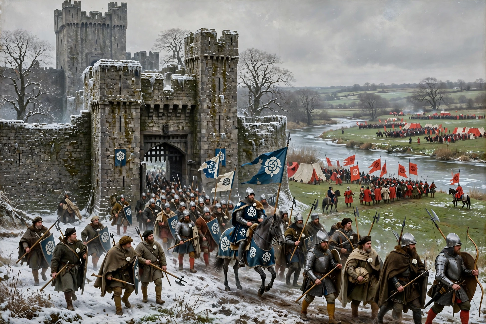

Battle of Wakefield

The Battle of Wakefield took place on 30 December 1460 in the Wars of the Roses, near Wakefield in Yorkshire, England. The Lancastrian army decisively defeated the Yorkist force, and Richard Plantagenet, 3rd Duke of York — claimant to the throne under the Act of Accord — was killed in the fighting, along with his second son Edmund, Earl of Rutland, and his adviser the Earl of Salisbury.
| Date | 30 December 1460 |
|---|---|
| Location | Wakefield, Yorkshire, England |
| Result | Lancastrian victory |
| Belligerents | House of Lancaster — House of York |
| Commanders | Duke of Somerset; Earl of Northumberland; Lord Clifford — Richard, Duke of York †; Edmund, Earl of Rutland †; Earl of Salisbury † |
Background
Under the Act of Accord of October 1460, Richard of York was named heir to Henry VI, disinheriting the king's son Edward of Westminster. Queen Margaret of Anjou refused to accept this and raised an army in the north. York travelled to Sandal Castle near Wakefield at Christmas 1460 with a smaller force, expecting reinforcements, while a large Lancastrian army gathered nearby at Pontefract.
The battle
For reasons still debated — possibly to forage, possibly lured by a feigned retreat, or provoked by insults — York led his men out of the strong castle position on 30 December and attacked the Lancastrians on Wakefield Green. The Yorkists were caught between two Lancastrian divisions and overwhelmed. York was killed on the field; Rutland was killed during the rout, according to tradition by Lord Clifford at Wakefield Bridge; Salisbury was captured and beheaded the following day.
Aftermath
The heads of York, Rutland and Salisbury were displayed on Micklegate Bar in York, the duke's adorned with a mocking paper crown. York's claim passed to his eldest son Edward, who avenged the defeat at the Battle of Mortimer's Cross and, after the great Yorkist victory at Towton in March 1461, was crowned Edward IV.